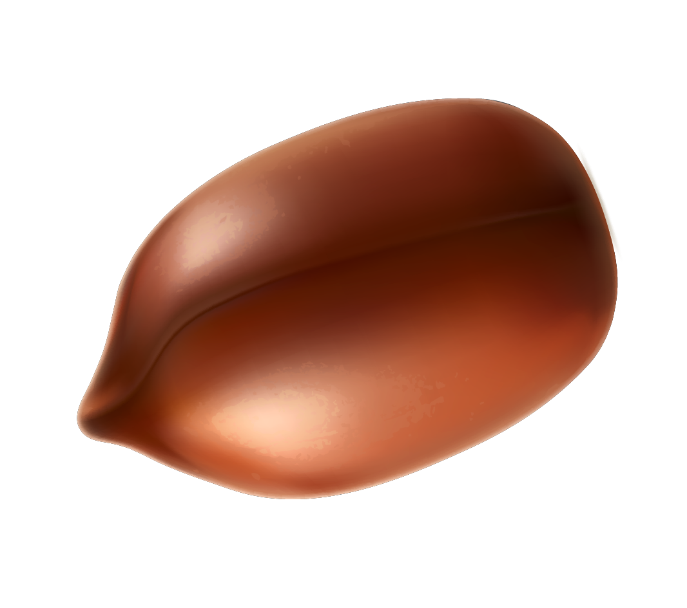
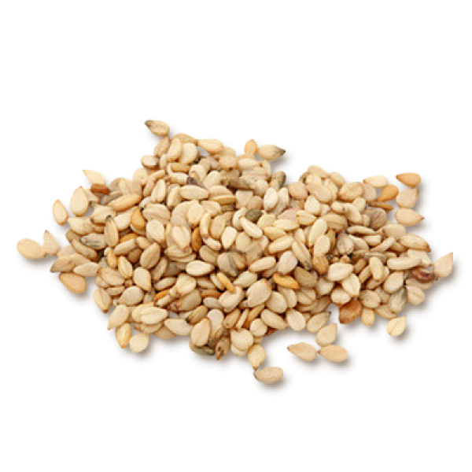
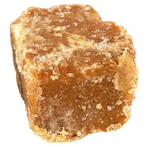

Our mission is to provide the best and healthiest snack bars with tasty natural ingredients that will appeal as the first choice to munch on during snack time.
ABOUT
Years of eating Chikki's made by his Grandmother, 12 year old Mohnish Soni has always felt it’s a snack that everyone would love. Through the Young Entrepreneurs Academy, Mohnish finally feels he has the opportunity to launch his own business of the most natural sweet snack bars called CHIKKI BARS.
WHAT ARE CHIKKI BARS MADE OF?

PEANUTS

SESAME

JAGGERY
Chikki Bars offers four types of bars ~
1. Peanut & Jaggery,
2. Sesame & Jaggery,
3. Crushed peanut & Jaggery, and
4. Peanut, Sesame, Amaranth & Jaggery (3 in 1 bar).